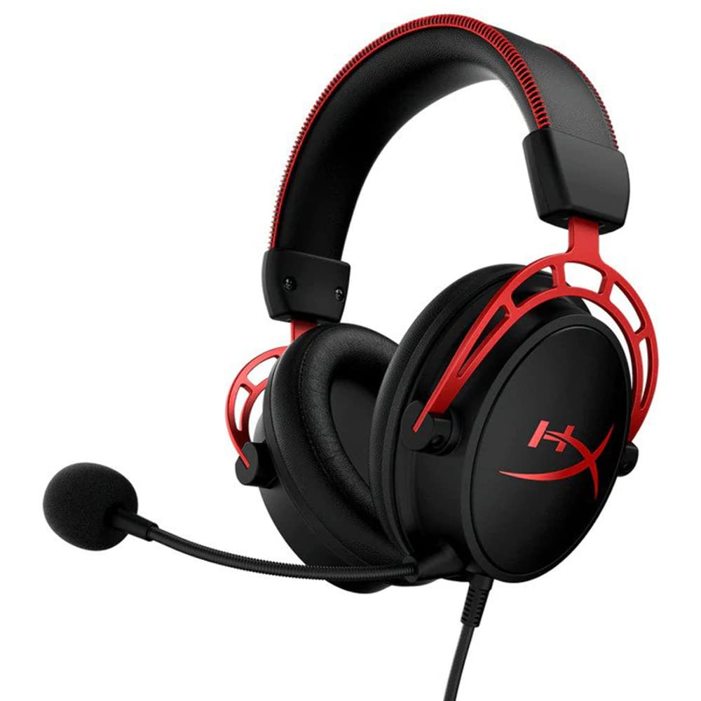

The Ultimate Guide to the Best Gaming Headsets for Glasses Wearers in India (2025)

The familiar ache behind your ears. The annoying pressure on the side of your head. For gamers who wear glasses, finding a comfortable headset can feel like an impossible mission. You're forced to choose between clear vision and clear audio, and the compromise is always uncomfortable.
But it doesn't have to be that way.
Here at Rishi Labs, we understand that comfort is key for long gaming sessions. We've dived deep into the world of gaming audio to find the headsets that don't just tolerate your glasses—they embrace them. This guide will break down exactly what to look for and give you our top recommendations available in India right now. No fluff, just honest insights.
What Makes a Headset "Glasses-Friendly"? The 4 Key Factors
Before we get to the products, it's important to understand why some headsets feel great with glasses and others feel like a medieval torture device. It comes down to four key design elements.
1. Earcup Design & Material
This is the most critical factor. You want deep, plush, over-ear earcups. Memory foam is your best friend, as it molds around the arms of your glasses, creating a good seal without excessive pressure. Breathable fabric earcups are often more forgiving than stiff leatherette.
2. Clamping Force
This is the "squeeze" the headset puts on your head. A headset with a high clamping force will be a nightmare for glasses wearers. We look for headsets with a light-to-medium, flexible clamping force that holds the headset securely without crushing your frames.
3. Frame Material
A headband made of flexible steel or durable aluminum is often better than one made of rigid plastic. A flexible frame allows the headset to contour to your head shape more naturally, accommodating the extra space taken up by your glasses.
4. Weight
It's simple physics: the lighter the headset, the less pressure it will exert on your head over time. A lightweight design is essential for marathon gaming sessions, preventing both head and ear fatigue.
Rishi Labs' Top Recommended Headsets for Gamers with Glasses
We've analyzed the market and tested numerous models to bring you the best options that combine comfort, sound quality, and value for money in India.
1. HyperX Cloud Alpha - The All-Round Champion of Comfort
The HyperX Cloud series is legendary for its comfort, and the Cloud Alpha is a standout. Its large, incredibly soft memory foam earcups and light clamping force make it feel like you're wearing pillows on your ears, even with thick-rimmed glasses.
Pros
- Exceptional comfort for glasses
- Durable aluminum frame
- Excellent audio quality
- Detachable microphone
Cons
- Slightly more expensive
2. SteelSeries Arctis Nova 1 - The Lightweight Contender

The SteelSeries Arctis line uses a unique "ski-goggle" headband that suspends the headset over your head, eliminating pressure points. This, combined with its extremely lightweight design and breathable AirWeave fabric earcups, makes it a top choice for glasses wearers.
Pros
- Extremely lightweight
- Ski-goggle headband prevents pressure
- Retractable microphone
- Good, clear audio
Cons
- Build is mostly plastic
3. Razer BlackShark V2 X - Excellent Value and Isolation

Razer has made huge strides in comfort, and the BlackShark V2 X is a prime example. Its thick, plush memory foam cushions are specifically designed to create a great seal and reduce pressure, making them surprisingly comfortable with glasses for a budget headset.
Pros
- Fantastic value for the price
- Thick ear cushions provide great noise isolation
- Lightweight design
- Great 7.1 surround sound
Cons
- Microphone is not detachable
4. Corsair HS55 Surround - The Plush and Flexible Option

The Corsair HS55 is a dark horse in the comfort race. It features plush memory foam and leatherette earcups with an adjustable floating headband design. Its light weight and low clamping force make it a very forgiving option for glasses frames.
Pros
- Very lightweight and flexible
- Soft earcups accommodate glasses well
- Includes a 7.1 surround sound adapter
Cons
- Audio is good for gaming, not the best for music
Frequently Asked Questions (FAQ) & Final Verdict
Do over-ear or on-ear headsets work better with glasses?
Over-ear headsets are almost always better. They are designed to completely enclose your ear, allowing the cushion to rest on your head around the ear, rather than pressing your ear and glasses arm together.
How can I make my current headset more comfortable with glasses?
If you're not ready to upgrade, try finding softer, deeper replacement earcups for your current model. Sometimes a "gel-infused" or "cooling gel" memory foam earcup can make a world of difference.
Our Final Recommendation
For most people, the HyperX Cloud Alpha remains the king of comfort, especially for glasses wearers. It’s a fantastic investment that will last for years. If you're on a tighter budget, the Razer BlackShark V2 X offers incredible comfort and performance for its price and is an excellent choice.